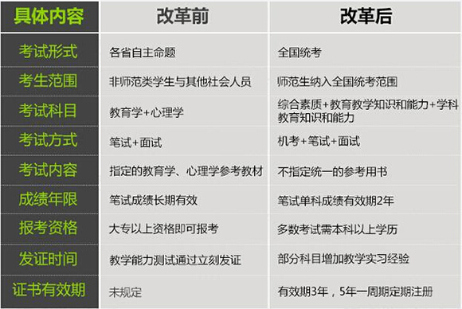

Conversation with 81184027 at Wed 13 Aug 2014 02:39:50 PM CST on 154115835 (webqq)
(02:42:50 PM) 此去经年: @蛋包飯 真的吗？
(02:40:19 PM) 光: (02:42:09 PM) 此去经年: 各位，人肉搜索犯法吗 //看那种程度了
(02:40:31 PM) 光: 如果人肉到黑进别人的邮箱
(02:40:35 PM) 光: 这明显是犯法的
(02:43:42 PM) 蛋包飯: 明年将全国统考。今年最后一年省内考试。
(02:44:00 PM) 此去经年: 嗯
(02:45:13 PM) 蛋包飯: 教育心理学 教育学
(02:45:20 PM) 蛋包飯: 教育学：2014年10月19日上午9︰00–11︰30。
教育心理学：2014年10月19日下午2︰30–5︰00。
(02:45:45 PM) 蛋包飯: 从2015年起我省将不再组织“两学”考试，将按教育部统一部署，组织实施全国中小学教师资格考试
(02:46:04 PM) 蛋包飯: 所以从明年开始教师资格将难度加大！
(02:48:36 PM) 蛋包飯: 报名时间：2014年6月11日-8月30日
(02:50:39 PM) 蛋包飯: 不过有了证也难进公立。我国公立比私立好。
(02:51:08 PM) 蛋包飯: 发达国家则相反，私立比公立的好。
(02:50:03 PM) 光: 嗯
(02:53:44 PM) 光: (02:33:50 PM) 光: 道德从来是律己的
(02:33:59 PM) 光: 正义也是一种道德
(02:34:11 PM) 光: 所以正义是个人的事情//正义的个人多了，才有正义的社会
(02:54:08 PM) 光: 诚信是个人的事情，诚信的个人多了，才有诚信的社会
(02:54:24 PM) 光: 所以个人主义是文明社会的标志
(02:57:29 PM) 此去经年: 人至清则无友:'(
(02:55:00 PM) 光: 先有文明的个人，才会有文明的社会
(02:55:16 PM) 光: 社会不就是一群人么
(02:56:11 PM) 光: 反过来标榜自己是文明的社会的
(02:56:22 PM) 光: 却缺乏文明的个人
(02:56:26 PM) 光: 那是什么社会啊
(02:56:36 PM) 光: 标榜自己是诚信社会的
(02:56:42 PM) 光: 却缺乏诚信的个人
(02:56:46 PM) 光: 是什么社会啊
(03:01:12 PM) 此去经年: 问一个比较自私的问题哈 你认为是在省会城市打工好些呢呢？还是在县供电公司工作好一些？
(02:58:29 PM) 光: (02:57:29 PM) 此去经年: 人至清则无友:'( //事实上，你标准高才能交到真的朋友
(02:58:44 PM) 光: 就好比质量检验标准一样
(02:58:56 PM) 光: 你想要买质量好的产品
(02:59:07 PM) 光: 难道不要精挑细选，货币三家么
(02:59:09 PM) 光: 那么朋友呢
(02:59:20 PM) 光: 难道朋友不比你买的产品更有价值
(03:00:00 PM) 光: 没有人说我专门买坑爹的产品的
(03:03:21 PM) 此去经年:
(03:00:24 PM) 光: 保质期一过就坏了，售后服务特差
(03:04:14 PM) 蛋包飯: @此去经年 当然是供电公司
(03:04:29 PM) 此去经年: ？
(03:04:32 PM) 蛋包飯: 省会城市你有房吗
(03:01:38 PM) 光: 人至察则无徒//事实上，没有人的衣钵弟子是随便挑选的
(03:04:46 PM) 此去经年: 没有
(03:04:46 PM) 蛋包飯: 如果省会城市没有房，还不如在县城舒服
(03:02:16 PM) 光: 比如苏格拉底的弟子可能很多，但是有名只有一个柏拉图
(03:05:34 PM) 蛋包飯: 省会城市里有一套你父母名下，或自己名下的房产，那可以打工。否则生活质量远远比不上县城供电局
(03:03:18 PM) 光: 柏拉图的弟子可能很多
(03:06:24 PM) 此去经年: 好，谢谢包饭
(03:03:25 PM) 光: 有名的只有一个亚里士多德
(03:03:49 PM) 光: 人至察则有徒
(03:07:00 PM) 蛋包飯: 因为你要租房，是不可避免的问题。省会寸土寸金房租绝对不会比县城低。
(03:08:34 PM) 此去经年: 嗯
(03:08:54 PM) 此去经年: 水至清则无鱼--b
(03:09:21 PM) 蛋包飯: 我家也是县城的。无力在省城购房。只能选择二线城市。
(03:06:22 PM) 光: 那就要找找水清有鱼的例子了
(03:06:24 PM) 光: 比如大海
(03:11:03 PM) 福建-福州&水浒: :D
(03:11:05 PM) 此去经年: 大海很浑浊的，哪门子谈的上至清？
(03:08:19 PM) 光: 那是入海口
(03:11:20 PM) 福建-福州&水浒: 现在大海的水也浑
(03:08:35 PM) 光: 上游带进很多的泥沙
(03:08:48 PM) 光: 你从google地图上看
(03:11:51 PM) 此去经年: @蛋包飯 小型城镇呐--b
(03:09:00 PM) 光: 离大陆越远，水就越清
(03:12:03 PM) 福建-福州&水浒: 嗯
(03:12:06 PM) 蛋包飯: 如今大海也被污染了。
(03:12:06 PM) 福建-福州&水浒: 嗯嗯
(03:12:10 PM) 福建-福州&水浒: 对头对头
(03:12:22 PM) 福建-福州&水浒: 我阿姨在莆田南日岛
(03:12:35 PM) 福建-福州&水浒: 好想去:-D
(03:09:53 PM) 光: 嗯
(03:13:06 PM) 福建-福州&水浒: 这几日下雨，长乐的水都是浑的
(03:13:12 PM) 福建-福州&水浒: 长江
(03:10:41 PM) 光: 嗯
(03:13:57 PM) 福建-福州&水浒: 这趟回去老家又没有出海边，唉
(03:14:19 PM) 福建-福州&水浒: 虽然才五千米的路程
(03:11:32 PM) 光: 水清不但有鱼而且还是大鲸
(03:14:38 PM) 福建-福州&水浒: 貌似没时间，天气太热也比较懒惰
(03:12:12 PM) 光: 嗯
(03:12:55 PM) 光: 入海口的水确实浑浊
(03:16:03 PM) 福建-福州&水浒: 对呀
(03:13:04 PM) 光: 用卫星地图上一看就看出来
(03:13:06 PM) 光: 嗯
(03:13:21 PM) 光: 岛附近全是土色
(03:16:34 PM) 福建-福州&水浒: 离海岸远就清澈了
(03:13:37 PM) 光: 嗯
(03:17:01 PM) 福建-福州&水浒: 大海真是一个神奇的地带
(03:14:06 PM) 光: 澳大利亚的大堡礁
(03:14:11 PM) 光: 水就很清
(03:14:16 PM) 光: 鱼很多的
(03:17:28 PM) 福建-福州&水浒: :D:D:D
(03:17:32 PM) 福建-福州&水浒: 海鲜好
(03:14:35 PM) 光: :face14:
(03:14:37 PM) 光: 嗯
(03:18:01 PM) 福建-福州&水浒: 我喜欢吃，要煮熟煮烂
(03:15:06 PM) 光: :face14:
(03:18:08 PM) 福建-福州&水浒: 不然寄生虫太多
(03:15:12 PM) 光: 嗯
(03:18:26 PM) 福建-福州&水浒: 容易得癌症:撇嘴:
(03:15:32 PM) 光: 哦
(03:15:44 PM) 光: 那估计是工业污染的结果
(03:15:48 PM) 光: 有重金属
(03:18:55 PM) 福建-福州&水浒: :撇嘴:
(03:16:04 PM) 光: 近海污染比较厉害
(03:19:28 PM) 蛋包飯: 核泄漏废水都进入日本海了。海鲜能安全么
(03:16:36 PM) 光: 化工厂的选址一般都靠海
(03:16:48 PM) 光: 化工厂必然是重污染
(03:19:48 PM) 福建-福州&水浒: 现在出海打鱼的也得跑很远才能打到鱼了
(03:16:53 PM) 光: 嗯
(03:22:21 PM) 福建-福州&水浒: 光先生～～你的英语水平超过怎么样
(03:20:00 PM) 光: 差
(03:20:06 PM) 光: 如果我的外语好的话
(03:23:12 PM) 福建-福州&水浒: :|
(03:20:13 PM) 光: 能力翻几倍
(03:20:16 PM) 光: 都不止
(03:23:22 PM) 蛋包飯: 光都放弃了赴日机会
(03:23:22 PM) 福建-福州&水浒: :撇嘴:
(03:23:57 PM) 福建-福州&水浒: 为什么美国官网的电子书阅读器卖的那么便宜才69美元
(03:24:10 PM) 福建-福州&水浒: 中国亚马逊的要899
(03:21:22 PM) 光: 税啊
(03:21:33 PM) 光: 剩下的都是政府拿去了
(03:24:44 PM) 福建-福州&水浒: :-(暴利的政府
(03:25:17 PM) 蛋包飯: 国富 民穷
(03:25:25 PM) 福建-福州&水浒: 近期没有人回国
(03:25:40 PM) 福建-福州&水浒: 有的话帮忙带一部回来
(03:23:15 PM) 光: 因为老外产品质量好
(03:23:20 PM) 光: 基本上不会坏
(03:23:28 PM) 光: 所以大多数人直接海外代购
(03:23:34 PM) 光: 便宜很多
(03:23:41 PM) 光: 淘宝很多代购的
(03:26:41 PM) 福建-福州&水浒: 是啊
(03:23:46 PM) 光: 嗯
(03:26:50 PM) 紫罗兰: 光缆很贵么？
(03:23:57 PM) 光: 不贵啊
(03:24:12 PM) 光: 塑料怎么可能贵
(03:24:21 PM) 光: 比金属成本低
(03:27:39 PM) 福建-福州&水浒: 淘宝代购也是很贵啊
(03:24:42 PM) 光: 光纤
(03:27:43 PM) 紫罗兰: 2块1米
(03:27:56 PM) 紫罗兰: 我在网上拍
(03:24:57 PM) 光: 嗯
(03:25:02 PM) 光: 要赚钱的说
(03:25:16 PM) 光: 信用卡这点好，那种双币的
(03:25:24 PM) 光: 可以直接在外国网站上拍
(03:25:40 PM) 光: 自己再找运送的
(03:29:05 PM) 蛋包飯: 代购要熟人
(03:26:08 PM) 光: 具体操作网上搜索一下
(03:31:01 PM) 紫罗兰: 包邮
(03:31:57 PM) 蛋包飯: 我有个同学专门在做海外代购
(03:32:07 PM) 福建-福州&水浒: @福州-仓山&阿萨 真的
(03:32:18 PM) 福建-福州&水浒: 哇靠，你同学靠谱么
(03:32:27 PM) 蛋包飯: 嗯。福清人
(03:32:32 PM) 福建-福州&水浒: 代购一下呗
(03:32:39 PM) 蛋包飯: 呗呗BEBE法国代购http://votre-bonheur.taobao.com/shop/view_shop.htm?spm=a1z0e.1.10010.5.iKNr3c
(03:32:54 PM) 福建-福州&水浒: 法国啊
(03:33:13 PM) 紫罗兰: 12000
(03:33:18 PM) 紫罗兰: 拍了
(03:33:37 PM) 蛋包飯: 嗯福清人，在日本生活了好多年！日语还不通
(03:34:05 PM) 福建-福州&水浒: :D:D
(03:38:09 PM) 上善若水: 12000米网线？
(03:38:14 PM) 上善若水: 那得多长
(03:38:35 PM) 上善若水: 得拉多远？
(03:38:48 PM) 蛋包飯: 你可以加下。专门做海外代购
(03:38:55 PM) 蛋包飯: 还有个同学是做香港代购
(03:39:55 PM) 福建-福州&水浒: 哇靠:blush:
(03:39:56 PM) 福建-福州&水浒: 很好
(03:40:01 PM) 福建-福州&水浒: 你同学么
(03:40:20 PM) 蛋包飯: 做这行的多着呢
(03:40:36 PM) 蛋包飯: 同学还有在瑞士的。
(03:40:37 PM) 福建-福州&水浒: @福州-仓山&阿萨 你帮忙问一下kindle电子书阅读器就行了
(03:41:04 PM) 蛋包飯: 我可以给你联系方式。我平时很少跟她们联系。嫁给老外了，麻雀变凤凰！
(03:41:31 PM) 福建-福州&水浒: :|嫁给老外了呀
(03:41:34 PM) 蛋包飯: 要知道我念外语出身的，不少女同学嫁给老外
(03:41:48 PM) 福建-福州&水浒: :B这么好
(03:42:13 PM) 蛋包飯: 直接和曹娜15159129979联系，价格因为在香港当地买，所以肯定比大陆专柜价格便宜
(03:42:37 PM) 福建-福州&水浒: :)好的
(03:42:43 PM) 福建-福州&水浒: 有qq么
(03:43:02 PM) 蛋包飯: 没有。刚才给你了QQ是福清同学。
(03:43:05 PM) 福建-福州&水浒: 打电话太冒昧了，还是网聊吧
(03:43:17 PM) 蛋包飯: 她带孩子一般不在线。
(03:43:54 PM) 福建-福州&水浒: 好吧
(03:40:59 PM) lost message from #195921 to #195921
(03:43:58 PM) 蛋包飯: 82年83年的女同学都是妈妈了。
(03:43:58 PM) 上善若水: (#195921)网络代购不上网怎么做？
(03:44:11 PM) 福建-福州&水浒: 很正常
(03:44:11 PM) 蛋包飯: 做爸爸的也很多了。
(03:44:11 PM) 上善若水: 那必须是呀
(03:44:20 PM) 上善若水: 都三十一二了
(03:44:23 PM) 福建-福州&水浒: 都30岁了女人了
(03:44:38 PM) 蛋包飯: :|就我单身着。。。。。
(03:44:52 PM) 福建-福州&水浒: 饭兄加油:奋斗:
(03:45:03 PM) 福建-福州&水浒: 赶紧找个媳妇
(03:45:45 PM) 蛋包飯: 虽然认识很多女的，人家看不上我
(03:45:58 PM) 福建-福州&水浒: 唉唉
(03:46:07 PM) 蛋包飯: 念书的时候就在女人堆里面
(03:46:12 PM) 福建-福州&水浒: 男人要大方点
(03:46:32 PM) 蛋包飯: 文科班一半以上是女生。外语专业又是大比例的女生。
(03:47:08 PM) 上善若水: http://mp.weixin.qq.com/s?__biz=MjM5MDY4ODA1NA==&mid=200810239&idx=2&sn=7a4080848d3e5802cc69b0955bb9c1d7#rd
(03:47:14 PM) 蛋包飯: 我脑子不行，情商和智商都很低，怕被女人骗:|。
(03:47:46 PM) 福建-福州&水浒: 你脑袋可以啊
(03:47:55 PM) 福建-福州&水浒: 可能记性不太好
(03:48:15 PM) 福建-福州&水浒: 多吃点鱼头就聪明了
(03:48:19 PM) 蛋包飯: 脑子不行，脑子行的话就念理工医学类
(03:48:25 PM) 福建-福州&水浒: 我特喜欢吃鱼头:tropical_fish:
(03:48:46 PM) 蛋包飯: 脑子不行的才念文史类。
(03:48:49 PM) 福建-福州&水浒: 只要鱼新鲜，鱼头肯定是我的
(03:50:04 PM) 蛋包飯: 当初数理化全部亮红灯。紧急转到文科班，成绩才全部变好。
(03:51:25 PM) 蛋包飯: 小时候被打都是打头，所以头脑笨。
(03:51:59 PM) 福建-福州&水浒: @x@x@x
(03:52:01 PM) 上善若水: 小时候老师打那几个差生真是触目惊心呀
(03:52:07 PM) 福建-福州&水浒: 被谁打头
(03:52:13 PM) 上善若水: 可是当时并不觉得有多不对
(03:52:16 PM) 紫罗兰: 是12000元
(03:52:24 PM) 蛋包飯: 我被打头，而且脑震荡过。所以脑子笨。
(03:52:28 PM) 上善若水: 六千米？
(03:52:48 PM) 上善若水: 你要那么长干吗？
(03:53:11 PM) 福建-福州&水浒: 哇靠
(03:53:22 PM) 蛋包飯:
(03:53:35 PM) 紫罗兰: 3盘，每盘3000米
(03:53:56 PM) 紫罗兰: 做工程的
(03:53:58 PM) 上善若水: 个人用？
(03:54:01 PM) 上善若水: 哦
(03:54:17 PM) 田慧慧-金华: 我四岁爬阳台摔跤成轻微脑震荡，住院好久。脑子还行，读书不错记性也很好啊。当时父母吵架没人留意我，我又顽皮到处爬。所以我一定照顾好我的女儿。
(03:54:31 PM) 上善若水: 我小时也摔过
(03:54:45 PM) 上善若水: 晕迷了半天
(03:54:53 PM) 紫罗兰: 不知道
(03:55:06 PM) 蛋包飯: 小时候脑子被震过两次都是脑震荡
(03:55:08 PM) 福建-福州&水浒: 怎么都摔过
(03:55:37 PM) 紫罗兰: 我长外伤，跌打伤
(03:56:44 PM) 上善若水: 但我数理比较好，那时考试不上九十分老师就会谈话
(03:56:44 PM) 蛋包飯: 
(03:57:00 PM) 紫罗兰: 我什么都不好
(03:57:12 PM) 蛋包飯: 数理化对我就是飞机课，上课坐飞机
(03:57:21 PM) 蛋包飯: 云里雾里，飘飘渺渺。。。
(03:58:27 PM) 上善若水: 那时我不会听老师的课呀
(03:58:37 PM) 此去经年: 我的软肋是文科政史地，记忆力差，往死里背都记不住
(03:58:43 PM) 福建-福州&水浒: 饭哥要多看点言情小说
(03:58:59 PM) 福建-福州&水浒: 讨媳妇不吃亏
(03:59:09 PM) 上善若水: 小学老师叫默写课文
(03:59:33 PM) 上善若水: 谁先交上去谁就先放学回家吃饭
(03:59:46 PM) 蛋包飯: 我只适合背书。。。死记硬背。所以智商很低。
(04:00:15 PM) 上善若水: 而我家离学校又远，所以经常回家饭还没吃饱又得往学校跑
(04:00:30 PM) 上善若水: 布下午放学有时摸黑回家
(04:00:38 PM) 福建-福州&水浒: :O
(04:00:45 PM) 福建-福州&水浒: 山区啊
(04:00:51 PM) 上善若水: 那些记忆有时有点恐怖
(04:01:07 PM) 紫罗兰: 我不看小说
(04:01:25 PM) 紫罗兰: 我不捣蛋
(04:01:29 PM) 福建-福州&水浒: 小时候学校离我家不远跑步回去一分钟
(04:01:37 PM) 紫罗兰: 我做什么了？我不知道
(04:02:01 PM) 上善若水: 前阵小学老师过世，另一同学说她对老师并没好感
(04:02:08 PM) 紫罗兰: 我上小学走路一个小时，还是小跑呢
(04:02:13 PM) 福建-福州&水浒: 上初三是还开摩托车上学～～
(04:00:29 PM) lost message from #195992 to #195992
(04:02:28 PM) 上善若水: 我得走三十分钟
(04:00:29 PM) lost message from #195994 to #195995
(04:03:12 PM) 福建-福州&水浒: 在福州时，骑行50公里去学校，周末再骑回来，自行车
(04:02:20 PM) 紫罗兰: (#195992):|
(04:02:36 PM) 紫罗兰: (#195994)我到现在也没有摩托车
(04:03:05 PM) 此去经年: (#195995)
(04:03:37 PM) 福建-福州&水浒: 只因省下那十几块车费钱
(04:03:43 PM) 福建-福州&水浒: 还锻炼了身体
(04:04:23 PM) 此去经年: 享受
(04:04:25 PM) 上善若水: 回家了，把孩子接过来住几天
(04:04:31 PM) 福建-福州&水浒: 50公里，我高记录是一小时20分钟到家，骑自行车
(04:04:38 PM) 上善若水: 让她看看老爸如何工作
(04:04:46 PM) 上善若水: :-D
(04:05:35 PM) 福建-福州&水浒: 骑自行车:bike:在福州市区转转很不错
(04:06:00 PM) 蛋包飯: 福州那么大，自行车累
(04:06:12 PM) 福建-福州&水浒: 是挺累啊
(04:06:18 PM) 福建-福州&水浒: 但是也有乐趣
(04:06:58 PM) 福建-福州&水浒: 我喜欢不同
(04:08:47 PM) 福建-福州&水浒: 当爹的感觉真好
(04:08:53 PM) 蛋包飯: 去小学教书应该不错:D
(04:10:13 PM) 福建-福州&水浒: 去小学教书不错
(04:10:33 PM) 福建-福州&水浒: 这次回去看到我小学的班主任都开小轿车了
(04:10:34 PM) 蛋包飯: 小学生比较听话。中学生很叛逆
(04:10:52 PM) 蛋包飯: 妈的，公立学校吃死掉。国家财政补贴
(04:10:54 PM) 福建-福州&水浒: 不错呀，一个月工资4000多
(04:11:03 PM) 蛋包飯: 擦，相当不错
(04:11:20 PM) 福建-福州&水浒: 跟着学生一起休假
(04:11:38 PM) 蛋包飯: 带薪寒暑假。一直是我的期盼。
(04:11:45 PM) 福建-福州&水浒: 除去课程想当是工作半年了
(04:11:58 PM) 蛋包飯: 我就想教个副科，混混日子
(04:12:08 PM) 福建-福州&水浒: 灰常好
(04:12:14 PM) 蛋包飯: 英语在小学是副科。:D
(04:12:25 PM) 福建-福州&水浒: :D
(04:12:48 PM) 福建-福州&水浒: 如果还有机会，当个小学历史老师也不错
(04:12:57 PM) 福建-福州&水浒: 也是偏课题
(04:13:10 PM) 蛋包飯: 嗯。历史，地理，英语，体育，音乐都是副科。
(04:15:59 PM) 蛋包飯: 还有，美术老师，混日子最好过。
(04:16:30 PM) 蛋包飯: 一个星期最多两节美术课，日子悠哉啊
(04:20:47 PM) 此去经年: 非法胎儿性别鉴定和选择性别的人工终止妊娠（简称“两非”）是导致我国出生人口性别比长期居高难下的直接原因。尽管综合治理多年，但却没有扭转 我国面临着男女比例失衡的严峻形势。 种种因素看来，未来可能出现的大批“剩男”将成为普遍的社会问题。
(04:21:38 PM) 蛋包飯: 据说，女教师非常吃香，都被公务员娶走了
(04:21:58 PM) 蛋包飯: 事业编制。
(04:22:28 PM) 此去经年: 几年前，男的
(04:22:59 PM) 蛋包飯: 几年前，我见过一个小学教师。居然看不上我，嫌我矮了:|
(04:23:26 PM) 此去经年: 当教师被让人看扁
(04:23:53 PM) 蛋包飯: 不。如今教师这职业很好。仅次于国家公务员。两者都是吃国家财政的，旱涝保收。
(04:23:54 PM) 紫罗兰: 群里相亲，一单身29岁未婚男娶一个26岁离异带7岁女儿的女士
(04:24:24 PM) Loki : 19岁就有孩子。
(04:24:29 PM) 蛋包飯: 不仅旱涝保收。工作地点也稳定。
(04:24:32 PM) Loki : 这个女孩子真不矜持。
(04:24:39 PM) 蛋包飯: 不会频繁调动。
(04:24:57 PM) 山东-青岛&昆吾: 幼师也不错
(04:25:01 PM) 山东-青岛&昆吾: 有编制的
(04:25:24 PM) 蛋包飯: 幼师要男的么？基本清一色女幼师
(04:25:49 PM) 蛋包飯: 如今私立幼儿园多。进编制内困难。
(04:26:08 PM) 山东-青岛&昆吾: 嗯
(04:26:08 PM) 蛋包飯: 国人疯抢编制。
(04:26:18 PM) 蛋包飯: 有编制的，就意味着一辈子安逸。
(04:26:21 PM) 山东-青岛&昆吾: 嗯
(04:26:44 PM) 蛋包飯: 关键四个字：旱涝保收。
企业就做不到这四个字。
(04:26:47 PM) 山东-青岛&昆吾: 前一段时间有人介绍了个幼师给我:D
(04:26:59 PM) 山东-青岛&昆吾: 人家没看好我
(04:27:19 PM) 蛋包飯: 当然了!幼师也是想嫁给公务员的
(04:27:31 PM) 山东-青岛&昆吾: 后来我又谈了一个，她又对我有点意思:撇嘴:
(04:27:44 PM) 蛋包飯: 你若是编制内公务员，娶个幼师不难
(04:28:29 PM) Loki :
(04:28:31 PM) 蛋包飯: 公务员的脑袋上不仅是国家的光环，还有福利，权力，地位等意味。
(04:28:31 PM) 福建-福州&水浒: @KUNWU 你多大年纪
(04:28:45 PM) 山东-青岛&昆吾: @福建-福州&水浒 89年的
(04:28:51 PM) 福建-福州&水浒: :|
(04:29:03 PM) 蛋包飯: 89年，还小
(04:29:39 PM) 福建-福州&水浒: 90后是个你
(04:30:00 PM) 蛋包飯: 89年平成元年。
(04:30:03 PM) 山东-青岛&昆吾: 那幼师90年的
(04:30:25 PM) 福建-福州&水浒: 适合
(04:31:01 PM) 福建-福州&水浒: :撇嘴:我爱人91年的
(04:31:50 PM) Loki : 心碎你多大？
(04:31:51 PM) 蛋包飯: 擦。娶个90后:强:
(04:32:02 PM) 福建-福州&水浒: 缘分到了，差5岁不是问题
(04:32:07 PM) 福建-福州&水浒: 我86年的
(04:32:13 PM) 蛋包飯: 牛:强:
(04:32:15 PM) Loki : 我家姑娘也是九零后。我85年的。
(04:32:18 PM) Loki : 。。。
(04:32:28 PM) Loki : 我一直以为心碎比我大
(04:32:28 PM) 福建-福州&水浒: :|:-|
(04:32:32 PM) 蛋包飯: 都很牛:强:
(04:32:35 PM) 紫罗兰: 我沉默
(04:33:00 PM) 福建-福州&水浒: 为90后年轻买单，他2012年信全能:[
(04:33:40 PM) 紫罗兰: @心碎乌托邦 现在怎么样？
(04:34:15 PM) 福建-福州&水浒: 退出了
(04:34:37 PM) 蛋包飯: :|:|全能神的领导层很年轻
(04:34:49 PM) 蛋包飯: 我见过一个区带领就是90后。
(04:35:36 PM) 福建-福州&水浒: :-(～～～～～
(04:35:42 PM) 山东-青岛&昆吾: 我当个区带领可好？
(04:35:54 PM) 福建-福州&水浒: 可以:blush:
(04:35:57 PM) 山东-青岛&昆吾: 带人打进区政府！
(04:35:59 PM) 福建-福州&水浒: 批准
(04:36:10 PM) 山东-青岛&昆吾: 建立神的国度
(04:36:16 PM) 山东-青岛&昆吾: 消灭大红龙！
(04:36:43 PM) 福建-福州&水浒: :!:!:!
(04:36:50 PM) 紫罗兰: :handclap::handclap::handclap::handclap:
(04:36:58 PM) 紫罗兰: :jump::jump::jump::转圈::转圈::转圈:
(04:37:07 PM) 山东-青岛&昆吾: 安拉阿胡阿克巴！
(04:37:36 PM) 山东-青岛&昆吾: 武装夺取政权！
(04:38:35 PM) 柠檬: :强::强:
(04:38:40 PM) 福建-福州&水浒: 查水表
(04:39:22 PM) 紫罗兰: 顺丰速运
(04:41:20 PM) 山东-青岛&昆吾: 神家的水表，不怕查
(04:41:48 PM) 福建-福州&水浒: --b
(04:45:11 PM) 紫罗兰: :)
(04:48:30 PM) 福建-福州&水浒: 紫罗兰今年年龄多大呀
(04:49:05 PM) 蛋包飯: 消灭大红龙???大红龙抓你坐牢
(04:49:53 PM) 蛋包飯: 此人参加邪教全能神组织，判有期徒刑一年。
(04:50:39 PM) 紫罗兰: 我28
(04:50:55 PM) 紫罗兰: 干嘛问我多大？
(04:51:00 PM) 福建-福州&水浒: 我靠，你28周岁就上个孩子了
(04:51:13 PM) 紫罗兰: :$
(04:51:13 PM) 福建-福州&水浒: 你结婚得多早啊:|:L:wipe:
(04:51:24 PM) 蛋包飯: 早破处嘛，不奇怪。
(04:51:28 PM) 福建-福州&水浒: 是不是未成年就未婚了
(04:51:33 PM) 福建-福州&水浒: :|:|:|
(04:51:35 PM) 紫罗兰: 不是呀
(04:51:44 PM) 紫罗兰: 24结婚
(04:52:29 PM) 蛋包飯: 擦。。。很早结婚
(04:52:45 PM) 紫罗兰: 跟你比是早了
(04:52:55 PM) 福建-福州&水浒: 28生三个娃
(04:52:55 PM) 蛋包飯: 24岁我刚毕业。
(04:53:01 PM) 蛋包飯: 2006年我刚毕业出来实习。
(04:53:02 PM) 福建-福州&水浒: 一年生一个？
(04:53:08 PM) 福建-福州&水浒: 这不合逻辑啊
(04:53:29 PM) 紫罗兰: 生2胎
(04:53:39 PM) 紫罗兰: 一对龙凤胎
(04:53:42 PM) 紫罗兰: 8-)
(04:53:49 PM) 蛋包飯: 擦，为什么2胎？双胞胎吗
(04:53:55 PM) 福建-福州&水浒: 那还是三个？
(04:55:46 PM) 福建-福州&水浒: 太牛了
(04:56:28 PM) 此去经年: 两次妊娠，其中一次是生了一对龙凤胎
(04:56:30 PM) 此去经年:
(05:03:08 PM) 紫罗兰: :D
(05:03:11 PM) 紫罗兰: 嗯
(05:03:28 PM) 紫罗兰: 还有问题么
(05:04:05 PM) 福建-福州&水浒: 没有了呀
(05:04:48 PM) 山东-青岛&昆吾: 神家座下又添孙啊
(05:04:51 PM) 山东-青岛&昆吾: 恭喜
(05:05:09 PM) 紫罗兰: :$
(05:05:27 PM) 紫罗兰: 你快把我拉回去
(05:05:32 PM) 紫罗兰: @KUNWU
(05:08:15 PM) 福建-福州&水浒: 拉什么@紫罗兰
(05:08:43 PM) 紫罗兰: 发错
(05:09:33 PM) 福建-福州&水浒: :L
(05:12:52 PM) 福建-福州&水浒: 忘记带烟就下班他
(05:13:11 PM) 山东-青岛&昆吾: 买一盒
(05:13:58 PM) 福建-福州&水浒: 家里有两盒
(05:14:06 PM) 福建-福州&水浒: 还买干嘛
(05:14:21 PM) 福建-福州&水浒: 回办公室拿
(05:17:28 PM) 紫罗兰: 烟炮
(05:17:37 PM) 蛋包飯: 求购2014年小学教师资格《教育学》、《教育心理学》、《综合素质》、《教育教育知识与能力》:L
(05:19:41 PM) 福建-福州&水浒: 紫罗兰离婚了，不打算再找么
(05:19:42 PM) 上善若水: 我们家无烟区
(05:19:58 PM) 福建-福州&水浒: 本群有许多光杆:D
(05:20:12 PM) 蛋包飯: 吊着个油瓶，买一送二。:L
(05:20:23 PM) 上善若水: 为了孩子别抽烟
(05:20:23 PM) 紫罗兰: :|
(05:20:41 PM) 此去经年: 我姐考教师考了很久还没过关
(05:21:02 PM) 蛋包飯: 为何？很难考么
(05:21:11 PM) 此去经年: 深圳广州东莞惠州河源都考了
(05:21:12 PM) 蛋包飯: 求购2014年小学教师资格《教育学》、《教育心理学》
(05:21:21 PM) 上善若水: 将来领养一个孩子
(05:21:31 PM) 此去经年: 挺难考的，是
(05:21:49 PM) 蛋包飯: 你说的是公立学校公开招聘考试吧
(05:21:59 PM) 此去经年: 是
(05:22:13 PM) 蛋包飯: 公立学校公开招聘当然难了。要关系的
(05:19:18 PM) 光: 学习型组织(Learning Organization)
学习型组织一般具有三个特点:
一是组织的整体重于局部,部门间的边界要尽量弱化
二是将平等作为主要的价值观,它是一种能营造集体意识和人与人之间相互关心的文化氛围的组织；
三是奉行鼓励冒险、变革和不断改进。
(05:22:46 PM) 蛋包飯: 有关系的话，考试就走个过场。
(05:22:58 PM) 此去经年:
(05:24:02 PM) 蛋包飯: 求购(小学)教育学教育心理学旧书，本人穷人